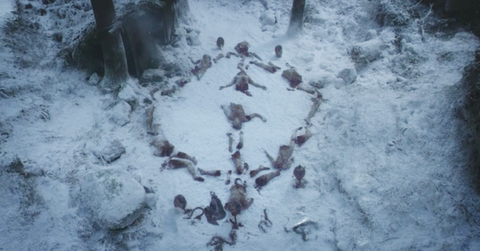

(...) Content omitted for preview
One Symbol To Rule Them All
Symbol of a Divine Relationship
If we had to say Game of Thrones is about ONE thing, we would have to say it is about POWER or what it means to be a good RULER (a good ruler has a straight edge). But it appears we have to say, at the least, Game of Thrones is about two things: FIRE and ICE. We can infer this much simply from the title of the book series the show is based on: 'A Song of Ice and Fire'.
Unless we are to assume the main characters of the story are two mindless elements, the title is our first taste of the use of symbolism, and a hint that we may need to dig beneath the surface. From this title we might guess that the story is about a contrast, a juxtaposition, or even a clash of antipodal pairs. Fire and Ice do seem naturally inimical neighbors, two which cannot cohabitate the same place. It does thus seem that conflict is inherent in the story, but most stories are about the resolution of conflict, internal or external, whether through war or through love.
It seems hardly a coincidence that in the very first overtly displayed symbol of the show (pictured above) we see a symbol that approximates a bisected circle, or at least, we can say, two equal but opposite halves of a whole, a picture of marriage, but possibly another relationship.
As Above, So Below

The symbol in question bears an uncanny resemblance to the Greek letter Phi. Phi is used as a symbol for Philosophy, but what makes it more significant in this context is the numerical ratio with which it is associated, a relationship which has garnered it names such as the 'Divine Proportion' and 'Golden Ratio'.
This ratio, 1.618... to 1 was known as early as the days of the ancient Greek mathematician, Euclid, and said to have been used in Greek architecture and art, though it may not have attained divine status until the Renaissance and the publication of a book in 1509 called 'On the Divine Proportion' by Luca Pacioli. Though it's not entirely clear why. The common explanations being that the ratio is aesthetically pleasing when used in art, and that it is commonly found in Nature. However, many ratios are aesthetically pleasing when used in art, and many ratios are found in Nature. What seems more likely to have earned phi the right to be deemed divine is its special relationhip between the larger and smaller part of the ratio. This proportion reflects religious ideas about the relationship between Heaven and Earth, God and Mankind, that from large to small, high to low, throughout the universe certain patterns repeat. In Hermeticism this idea is expressed simply as 'As above, so below'. In other words, the microcosm, the small universe, is an image of the macrocosm, the big universe.

Aligned with the 'As above, so below' principle, phi could simply be taken as a sign that the story is a parable, that it signifies that what follows is like something else. For, again, this is how a parable works: using one thing, e.g. a grain of mustard seed, to describe another, The Kingdom of Heaven . After all, the word 'parable' comes from the Latin parabola "comparison" which came to be used in math to denote a certain symmetrical shape, alike on both sides of a dividing line, which Φ itself is not unlike.
The Golden Mean
The Golden Ratio we just discussed is often confused with the Golden Mean. Though the two are not the same, and it is not associated with the letter Phi, the Golden Mean is relevant and noteworthy here. While the term Golden Mean comes from Greek Philosophy, the concept exists in other religions and philosophies and can be summed simply as "the Middle Way between two extremes". It is for this concept that Buddhism is called "the Middle Way" and it is often depicted in the Buddha's realization that his path lay between strict asceticism and total self-indulgence.
(...)if any one gives too great a power to anything, too large a sail to a vessel, too much food to the body, too much authority to the mind, and does not observe the mean, everything is overthrown, and, in the wantonness of excess, runs in the one case to disorders, and in the other to injustice, which is the child of excess. I mean to say, my dear friends, that there is no soul of man, young and irresponsible, who will be able to sustain the temptation of arbitrary power—no one who will not, under such circumstances, become filled with folly, that worst of diseases, and be hated by his nearest and dearest friends: when this happens his kingdom is undermined, and all his power vanishes from him. And great legislators who know the mean should take heed of the danger.
--Book III of Plato's LawsHear me, then: there are two mother forms of states from which the rest may be truly said to be derived; and one of them may be called monarchy and the other democracy: the Persians have the highest form of the one, and we (the Athenians) of the other; almost all the rest, as I was saying, are variations of these. Now, if you are to have liberty and the combination of friendship with wisdom, you must have both these forms of government in a measure; the argument emphatically declares that no city can be well governed which is not made up of both.
--Book III of Plato's LawsA Song of Salt

Another interpretation of the symbol is that it is, or is based on, the Alchemical symbol for salt--salts in general. Alchemy is not just an ancient precursor of chemistry, but chemistry nestled within the belief that the universe is God's Book, its signs are everywhere, and among these, few are as sanctified as salt. Like phi, salt has a quality that might be deemed divine.
In Western Alchemy, salts were seen to symbolize the "union of opposites" making them
religiously significant
as a sign of balance, wholeness, prosperity, and wisdom.
This link between salt and the union comes from a quality salts posess, for
salt can be defined as: any chemical compound formed from the reaction of an acid with a base...
The pH Scale

Acids and Bases are, of course, opposites, and they neutralize when united. So, salts don't only symbolize two coming together as one, but also the stability or harmony that results from the union.
The Union of Opposites

Table salt, for example, is composed of two highly reactive elements, sodium (Na) and chlorine (Cl). Whether they come together alone (Na + Cl) or in the form of an acid (HCl) and a base (NaOH) they not only neutralize each other but together form a happily married couple (NaCl) highly prized in the ancient world as a disinfectant, a seasoning, and preservative for keeping foods from going to ruin.
You are the salt of the Earth.
--Jesus speaking to his disciples. Matt. 5:13The symbolic significance of common table salt (perhaps salts in general) is found in a variety of religions in the area of the Mediterrean including the religions of Rome and Greece, Judaism, and Christianity. Often used in rituals involving purification, salt, being linked with unity, was also offered as a sign of trust or hospitality at gatherings.
Robb and Catelyn Stark are given a symbolic offering of bread and salt by Walder Frey as an observance of Guest Rights, a sign of trust.In Alchemy from Europe, Arabia, Persia, India and China, the first and foremost of opposites are the universal masculine and feminine principles which are widely symbolized by Sulfur and Mercury respectively. Whether it is from qualities the two possess individually or together as a salt it is not clear why these two elements were chosen above others to represent the royal pair. The two elements bound together form a red salt (mercury sulfide) known as cinnabar. Cinnabar was mined as early as Neolithic times and to this day is the most common source of the liquid metal Mercury. used as both a pigment and a medicine--despite being toxic--and considered by alchmeists to be an ingredient in creating the Philosopher's Stone, aka the Elixir of Immortality.